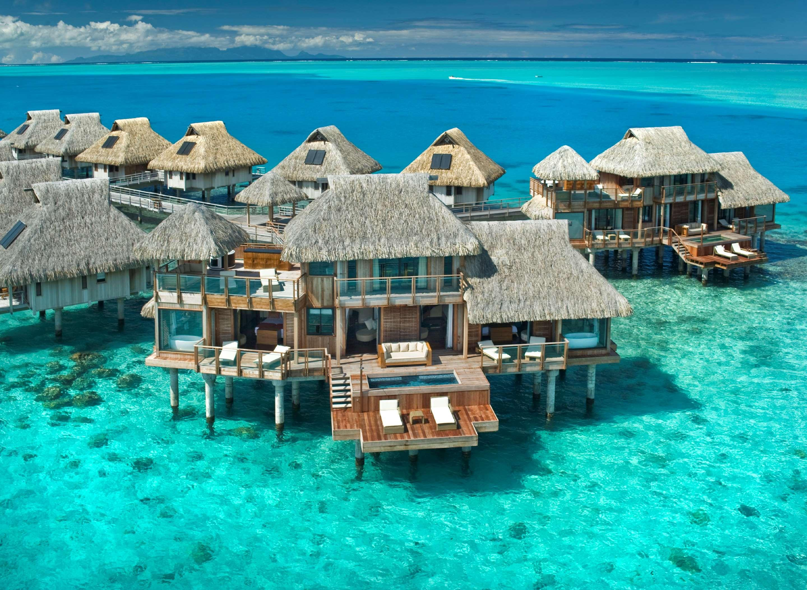
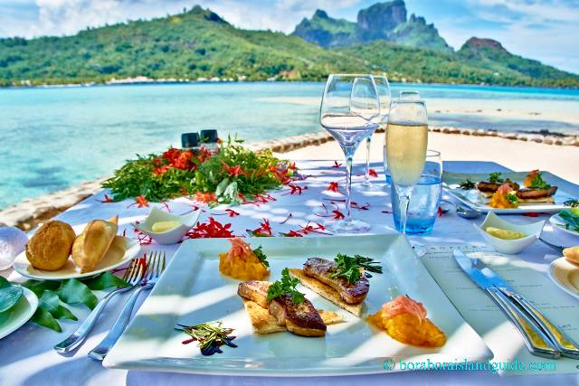
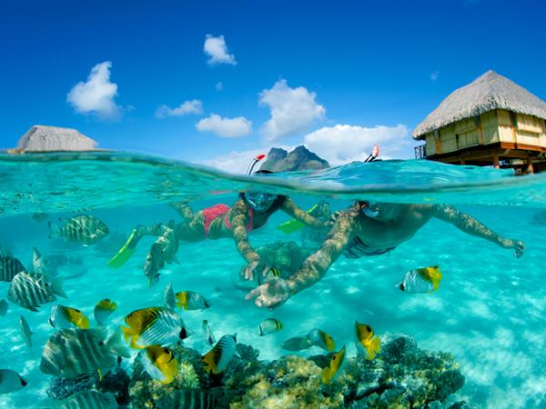

Bora Bora
Bora Bora is a small South Pacific island northwest of Tahiti in French Polynesia.Surrounded by sand-fringed motus (islets) and a turquoise lagoon protected by a coral reef, it’s known for its scuba diving. It's also a popular luxury resort destination where some guest bungalows are perched over the water on stilts.
Bora Bora island will make you feel love at first sight. With ocean views of turquoise waters resembling an artist’s palette of bright blues and greens, romantics from around the world appreciate Bora Bora’s, lush, tropical vegetation circling the perimeter of the island and the valleys of Mount Otemanu blossom with hibiscus. This south pacific island could easily be defined as the center of the romantic universe, where luxury, beach resorts, and spas dot the island with overwater bungalows, thatched-roof villas, and a fabled ambiance. Simply put, Bora Bora is one of the most beautiful islands in the world.
Food
Bora Bora has developed a unique culinary tradition as different cultures have infused the island with different traditions. The cuisine of Bora Bora is a mixture of traditional South Pacific cooking mixed with French, Italian and japanese influences.This style is seen in all types of resturants ranging from the high-end resorts to the roadside stands. While the style of food may have adapted over the year, the tradition of eating Tahitian food with you hands is something that has remained.
Many dishes also includes chicken, pork, sweet otatoes, breadfruit, rice, local fruit and vegetables such as papaya, mangoes, pineapple, bannanas and fafa, which is a type of spinach. Banana or papaya purees known as po'e are the most popular dessert served on the island.
Activities

Longing for a taste of the exotic? Bora Bora is waiting for you. Let SkyMiles be your free travel coordinator, pointing you to Bora Bora activities and Bora Bora excursions. It's time to plan your itinerary. Take a look and map out the top attractions in Bora Bora. From tourist favorites to local, best-kept secrets, the best spots are waiting for you.
There are so many things to do in Bora Bora that you'll have a hard time squeezing in all of the must see places on your Bora Bora tours. SkyMiles can help.
Heading to Bora Bora means experiencing a slice of paradise on earth. You'll be amazed by the tropical climate, sun, sea, and sand. Venture into the Bora Bora Lagoon or climb Mount Otemanu. Kick the dust off of your shoes and thoroughly enjoy all of the attractions in Bora Bora. Treasures of the sea will be tempting, like the Coral Gardens or Matira Beach. The water is warm, the waves will sing their sweet song all day long, and the gentle, soothing breezes will wash your cares away. Bora Bora is a South Pacific haven and delight. Don't let it pass you by.
Some of the activities and attractions in Bora Bora include:
- Bora Bora Glass Bottom Boat Tour
- Aqua Safari with Helmet
- Eco Shark and Ray Snorkel Safari
- Natura Discovery Sunset 4X4 Crater Expedition and Cultural Island Tour
- Matira Point
- Mt. Otemanu
- Motu Piti
- Leapard Rays Trench
- Coral Gardens